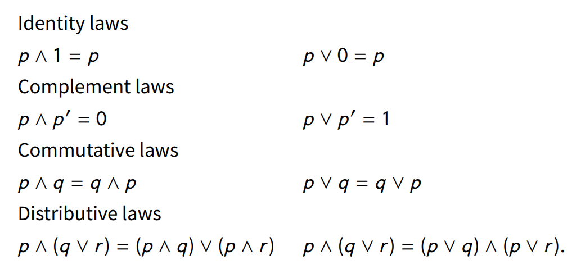
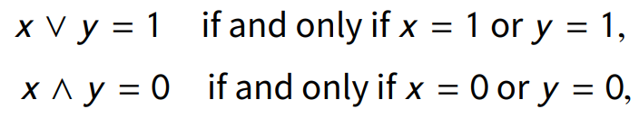
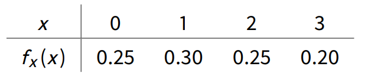
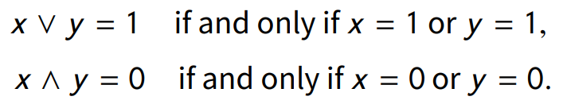
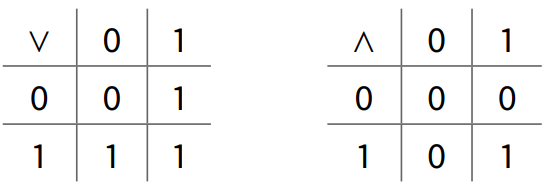
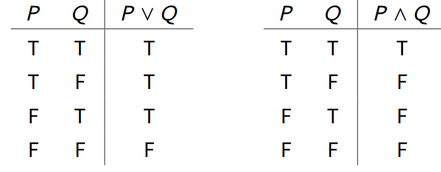
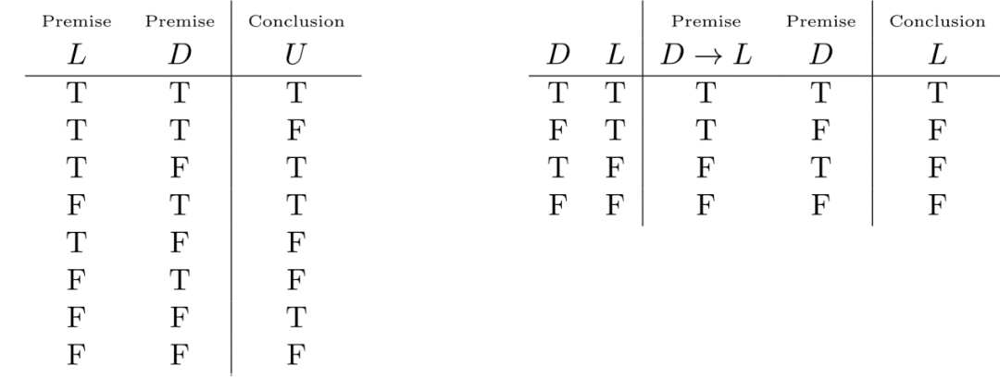

收录于合集
文献来源： Kevin A. Clarke (April 2020). “Logical Constraints: The Limitations of QCA in Social Science Research.” Political Analysis, pp.1-17.
作者简介： Kevin A. Clarke，罗彻斯特大学政治学系副教授

导论
定性比较分析（QCA，Qualitative Comparative Analysis）最初由Charles Ragin（1987；2009）提出，遵循密尔的比较方法，利用布尔代数的逻辑来进行因果推断。该方法旨在突出案例导向方法的独特优势，并且通过布尔代数进行形式化，成为定性比较研究中普适的方法（C.Ragin,1987:X）。虽然QCA方法在近些年发展非常迅速，APSA，ICPSR，IPSA等机构都有相关的研习课程。Stata，R和UNIX等软件也开发出了相应的包（package），但是这一方法依然面临着大量的批评。这些批评要么关注于QCA背后隐藏假设的问题(Seawright 2005b)，或者是不正确的推断(Hug 2013, Braumoeller 2015, Krogslund et al. 2015)，亦或者是和传统统计方法相比的独特性缺乏(Brady 2013, Paine 2016a,b)。
作者认为，尽管上述批评都是有意义的，但是有一个关键问题目前并没有提到，即基于二元（0-1）布尔代数的计算，它限制了研究者分析社会的视野。这种限制体现在三个方面：
其一，二元布尔代数限制了研究者对集合（sets）以及集合间交互作用的认识；
其二，作为一种命题逻辑（propositional logic），二元布尔代数在解释现代社会科学理论上是比较无力的；
其三，QCA方法无法对反事实进行建模，只能局限于常规的因果推断（必要性、充分性、INUS条件（充分不必要条件中的必要不充分部分，Mackie, 1965;1980））。
所以QCA和传统统计推断的区别在于前者是基于二元布尔代数的命题逻辑，而并非所谓的“集合论”与“非集合论”或回归分析法的区别。所以QCA实际上是处于定性研究和定量研究之间的区域，但是既没有小样本（small-N）定性研究的深度，也没有定量研究的推断能力。
布尔代数简介
****布尔代数作为一种所谓“集合论”的方法，与传统的统计推断有很大区别。而QCA方法重点使用的是二元布尔代数的逻辑，这是布尔代数最简单的形式。布尔代数包括以下几个部分：一个非空集合S；两个算法——并集和交集；补集；两个元素——0和1。运算符合以下法则：

而二元布尔代数有如下的性质：

正因为QCA使用布尔代数的逻辑，而统计推断使用线性代数的逻辑，故QCA的支持者声称QCA和统计方法是完全不同的。例如在布尔代数中，x∪-x=1，而在线性代数中，x+（-x）=0（Thiem, Baumgartner, and Bol,2016:748）。但是这种理解是错误的，其原因在于在将布尔代数语言转换为线性代数语言的过程中，“-”应该理解为“1-”而非负的。所以声称两种代数的逻辑不相称实际上是有误的。
集合、布尔代数和统计学
基于上文的考虑，作者认为，定量方法是以集合和布尔代数为基础的，定量研究者基于更广义的布尔代数来理解和使用集合论的方法，而QCA的支持者并没有意识到集合、布尔代数和统计学之间的关系。以一个轮盘为例：
该轮盘包括1到36以及0,00共38个值，三种色区（黑色、红色和绿色）。对于非空集S={0，00,1,2，…,36}来说，每一个值都是该集合的元素，每一个色区都是该集合的子集。这个例子说明，定量（以数值为基础）和布尔代数（以事件，即该例子中的色区，为基础）对于集合和处理只是形式上的区别，而并没有本质差异。
当我们转动轮盘时，我们看到的是颜色的分区，进一步看到相应的数值，这就是从事件到统计数据的过程。这种数据被称为随机变量（random variable），而将随机变量再通过某一过程（即函数或映射）转换为事件结果。上述这种做法就是一种代数的做法，或者叫域（field）的方法。
再进一步定义集合簇（collection），如果集合簇满足三个条件，则成为一个域：
1、 结果集属于集合簇；
2、 如果某个集合属于集合簇，那么这个集合的补集也属于集合簇；
3、 如果两个集合都属于集合簇，那么它们的并集也属于集合簇。
上述定义说明集合簇是非空的闭集。而集合簇的运算则是一种布尔代数的运算。通过这种方式，布尔代数和随机变量就产生了联系。
再将概率引入集合簇中，如果满足三个条件，则集合簇可被视为是一个概率集合函数：
1、 结果集（全集）的概率是1；
2、 任意集合簇中的事件（元素）的概率大于或等于0；
3、 如果两个事件是互斥的独立事件，那么他们同时发生的概率是它们分别发生的概率之和。
那么这一集合中的每个事件及其概率则组成了一个概率分布列。以此为基础，则能进一步处理概率密度函数的问题。当涉及到具体的数值时，集合论者就认为这个并不是基于集合而发展出来的，但是实际上是一样的。例如考虑如下分布列：

分布列中每个数值都有对应的概率，而将数值重编码为零和非零，概率和依然是1，以0为元素的集合和以非零值为元素的集合的交集事件，其发生概率是0。这就说明概率和布尔代数依然是有关系的。
将集合对应到概率上，就能够进一步进行相加、相减和均值处理的操作。但对于以二元布尔代数为基础的QCA方法来说，就只有交集、并集和补集，没有平均值、中位数、众数、数学期望和方差等统计量，这实际上并不利于社会科学对现实世界的理解。尽管Ragin（2000）发展出了模糊集定性比较分析（fsQCA），也并没有改变这一困境。传统的QCA方法（或者说csQCA）和模糊集都利用真值表来处理相关问题，二者的差异仅在于对真值表的处理上，前者采用二值处理（属于或不属于），而后者采用渐进的等级划分。
相比较而言，统计方法则不受二元布尔代数的限制。通过对不确定性的分析，统计方法可以描述样本分布的中心趋势（central tendency）。同时统计方法也可以通过对随机变量的线性回归估计量来讨论不同集合之间的差异，这些是QCA方法无法做到的。Ragin（2005）宣称QCA是基于集合论的代数方法，而非基于回归分析的线性代数方法。基于上文的考察，这一宣称所强调的集合论和非集合论的区分仅仅是一个噱头（selling point）而已。
布尔代数的逻辑
逻辑有很多种，例如命题逻辑、演绎逻辑、模型逻辑以及一些非经典逻辑如构造逻辑等，而QCA方法就仅仅是布尔代数模型的命题逻辑。命题是一个陈述，或对或错，二者取一。命题逻辑关注简单的陈述和它们之间存在的关系（或者不存在关系）。它的真假是一个真值函数，即真值是命题逻辑中各项命题真值的函数。二元布尔代数就是一个命题逻辑模型，形式如下：

或者用算法表来表示，即

也可以用真值表来表示，即

虽然这种逻辑在计算机科学（以二进制0和1为基础）和电气工程中有重要作用，但是对于复杂的社会科学来说，这个逻辑并不像QCA的支持者所认为的那样是可靠的，而是存在很大的局限性。例如以下述三段论为例：
所有民主政体都有合法性
美国是民主政体
美国具有合法性
命题逻辑是无法处理上述三段论问题的，因为命题逻辑关注单独的命题以及命题的关系，忽略命题本身的结构。在这个例子中，命题逻辑只能处理单一的命题，而不会关注命题中的对象（美国）和性质（合法性）。也就会出现下图左边的不稳健推断。

而上图右边的推断是稳健的，因为这一推断的前提不是单一命题，而是命题的嵌套，即如果“美国是民主政体，那么它具有合法性”（D→L）和“美国是民主政体”（D），从而推导出结论“美国具有合法性”（L）。由于这种问题，命题逻辑进一步推动了谓词逻辑的发展，即“任意”∀和“存在”∃的出现，这种逻辑则是Halmos代数和柱形代数。但是QCA的二元布尔代数逻辑模型则并非这种谓词逻辑模型，这种逻辑语言是一种弱语言（weak language），无法处理三段论或者普遍经验法则的问题。
因果关系与命题逻辑
QCA研究者根据充分性和必要性来理解因果，关注因果关系的规律性描述。所以当大多数学者关注反事实分析或者潜在结果分析时，QCA研究者仍然致力于研究这些源于18世纪的规律验算。所以当我们理解将必要和充分等同于提示符“→”时，他们的观点就并不令人费解了。即充分条件是X→Y，而必要条件是X←Y。基于这个条件进一步发展出来的INUS条件成为QCA进行因果推断的命题逻辑方法，而这些是可以通过二元布尔代数表达出来的。但是对于反事实，往往无法验证。例如考虑这样的反事实，如果Collier没有去芝加哥大学，他就不会成为美国研究者，但是这个反事实是否正确呢，不得而知。有些QCA理论家认为可以通过¬ X→¬Y来表述反事实，但是实际上这并不是反事实，甚至都不是因果关系，这一表达是存在于真值表中的，而真正反事实是其前提并不存在。
所以定量学者并不会遇到这种限制，对于二值变量问题，他们会通过Logistic回归，饱和回归（saturated regression）或结构因果模型（Pearl, 2009）来处理。
结论
尽管遭受了很多批评，QCA在近些年依然飞速发展。通过集合论（理解为二元布尔代数（0-1））以及自然语言（理解为命题逻辑），QCA认为能够进行因果推断，但是实际上忽略了这些工具在分析社会科学时的局限性。作者首先展示了二元布尔代数的局限性，其次说明命题逻辑是一种弱语言，最后说明QCA方法依靠充分性、必要性和INUS条件，限制了研究人员的思考。作者认为QCA虽然处于定性和定量研究的中间地带，但是它所带来的好处并不能遮盖它的局限性。
编译：刘天祥 审校：陆屹洲 编辑：康张城
【政文观止Poliview】系头条号签约作者